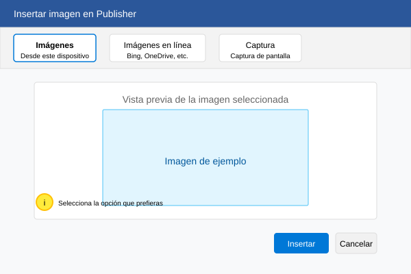
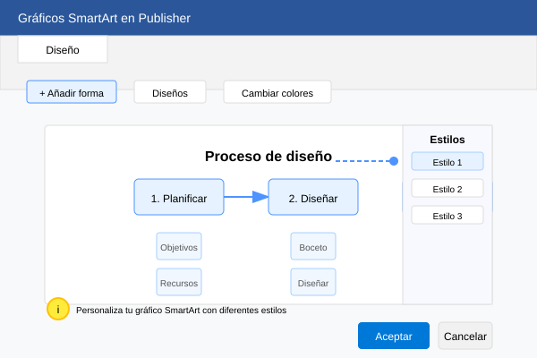

Sesión 4: Imágenes y gráficos
Aprende a trabajar con elementos visuales en tus publicaciones
Objetivos de aprendizaje
- Insertar y modificar imágenes
- Usar herramientas de edición de imágenes
- Trabajar con formas y gráficos
- Crear composiciones visuales
1. Insertar imágenes
Las imágenes son fundamentales en cualquier publicación. En Publisher puedes insertarlas desde tu computadora o en línea.
Para insertar una imagen:
- Ve a la pestaña Insertar
- Selecciona Imágenes o Imágenes en línea
- Busca y selecciona tu imagen
- Ajusta el tamaño y posición

2. Herramientas de imagen
Utiliza las herramientas de imagen para editar tus fotos directamente en Publisher.
✂️ Recortar
Elimina partes no deseadas
🔄 Girar
Rota la imagen
🎨 Correcciones
Ajusta brillo y contraste
3. Formas y gráficos
Crea elementos visuales con las herramientas de formas y gráficos SmartArt.

4. Actividad práctica
Crea un póster informativo
- Inserta una imagen de fondo
- Agrega un título con WordArt
- Incluye formas con información
- Añade un gráfico SmartArt
Resumen
En esta sesión has aprendido a trabajar con elementos visuales en Publisher, incluyendo imágenes, formas y gráficos.